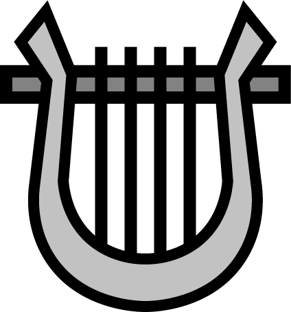
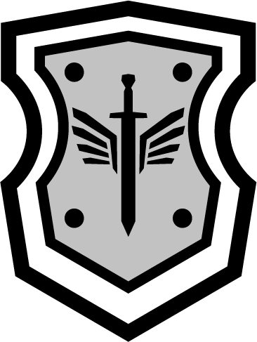
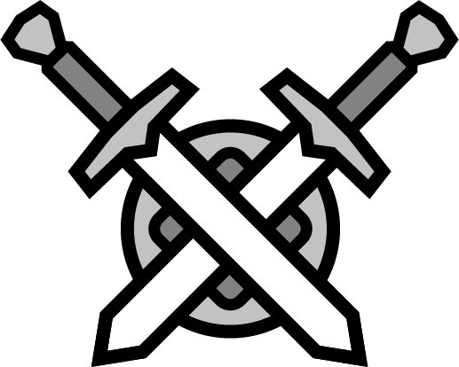

Kyle "Slappin the Salmon" Lybacki
Monk
Sound of body, peace of mind, full of liquor. These are the words our Monk lives by utilizing his drunken fist techniques, when not kicking ass or beating ass (there is a difference) he can be found putting together homes for the less fortunate.
Main Stats
Dexterity, Wisdom
Casey "Darkness" Mthombene
Bard
Some call him Darkness, some call him Casey... but his true nature is somewhat of a mystery. All know him for his charismatic nature and Bardly proclivities, you want a Casey at the party.
Main Stats
Charisma, Dexterity

Frank "Gitster" Schultze
Paladin
The pure of heart. The stout of character. The beautfiul soul. Frank being a truly devout Paladin seeks the good in all and lends his aid when and wherever he can. Always quick with a laugh and a roguish grin that doesn't quite match his docile nature.
Main Stats
Strength, Wisdom

Jesse "Squeekers" LePage
Fighter
Smash? SMASH!!!!!! Point this man in a direction and let him go, those goblins will probably be dead... a long with anything else within a kilometre radius. No worries though he'll work himself out and will need a nap.
Main Stats
Strength, Constitution
